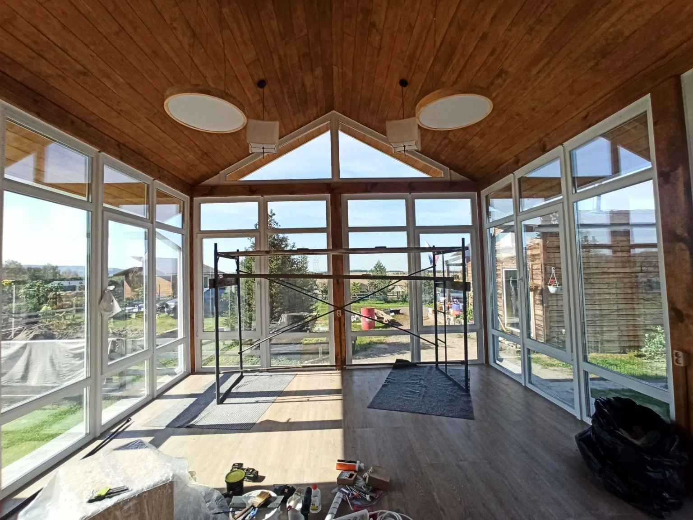
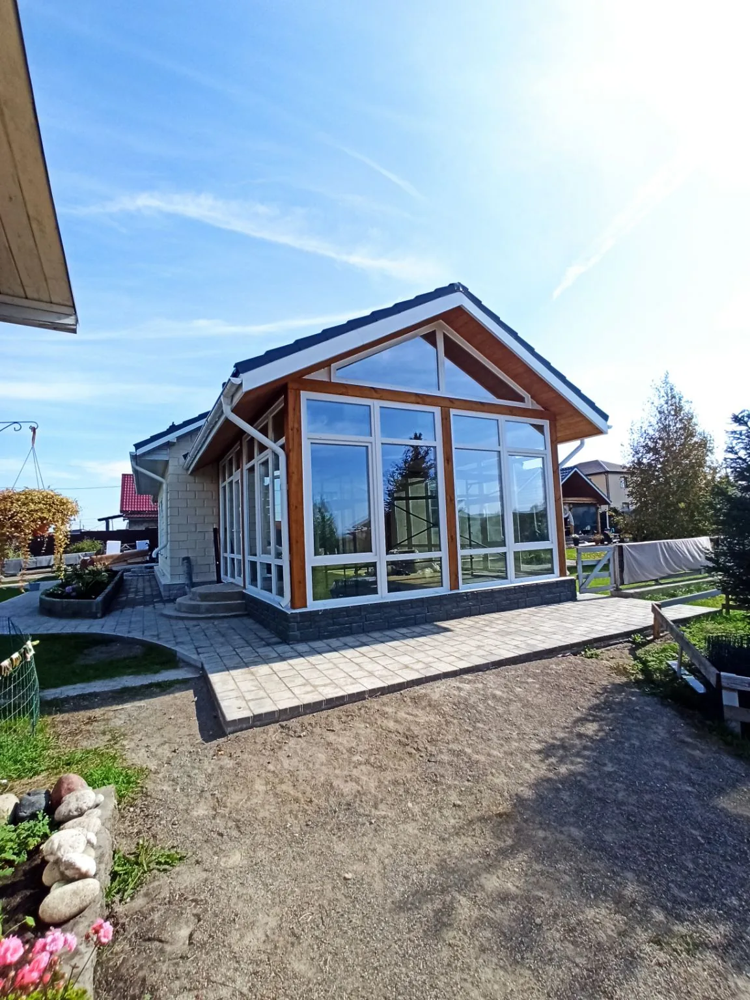
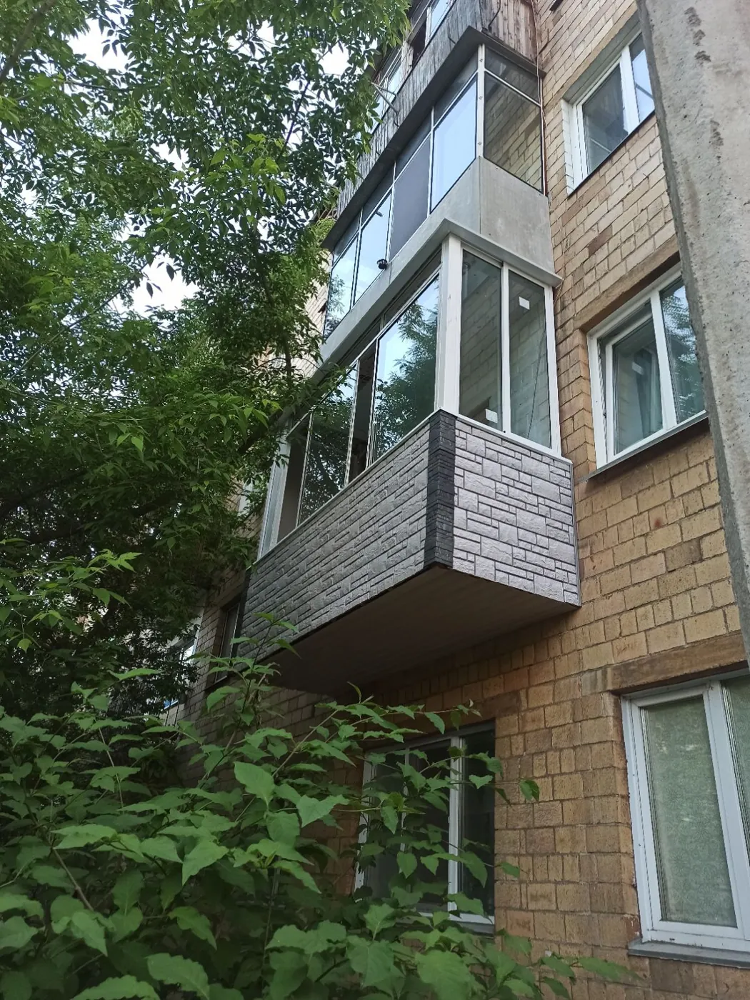
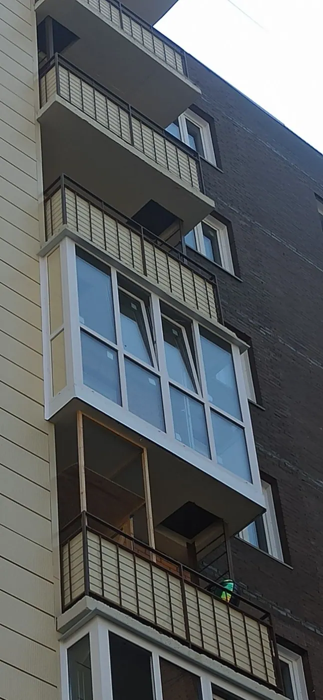
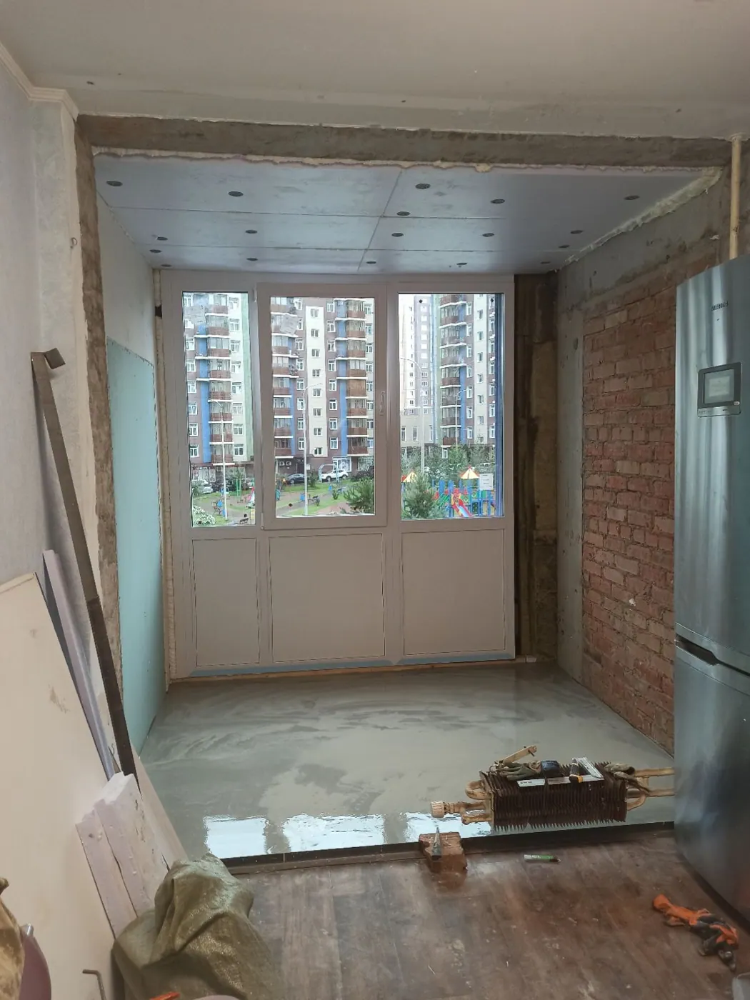
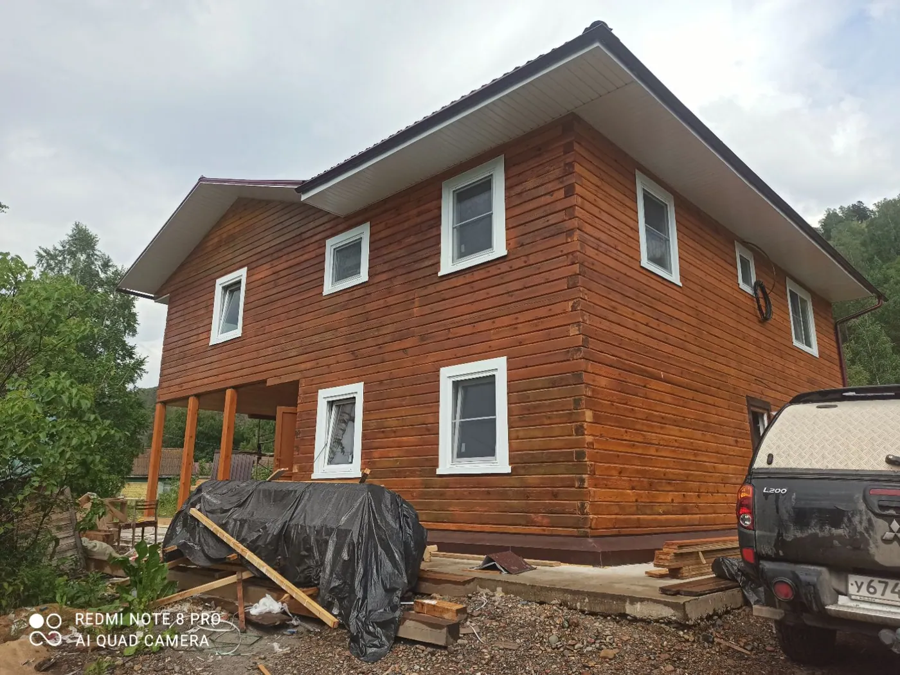
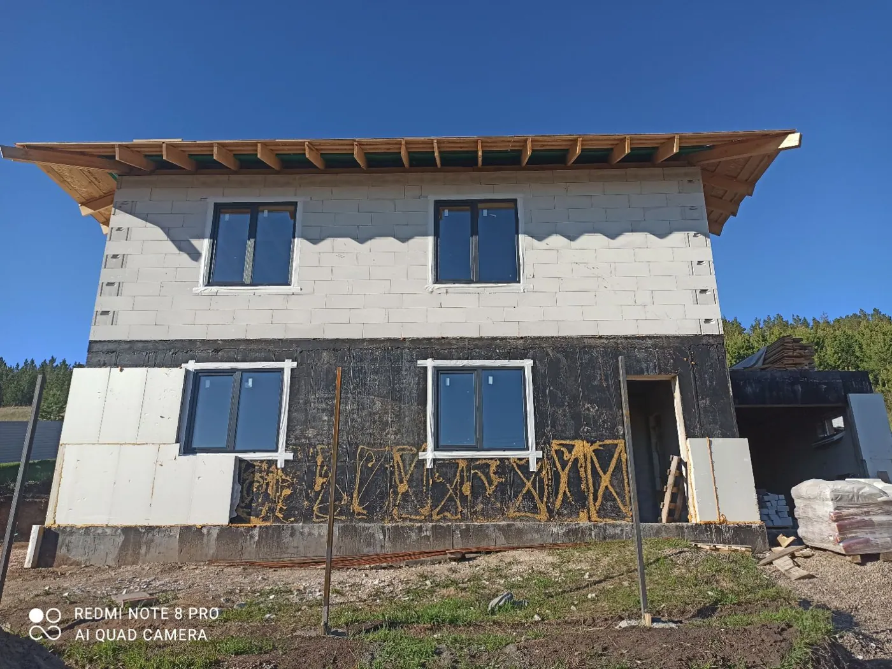
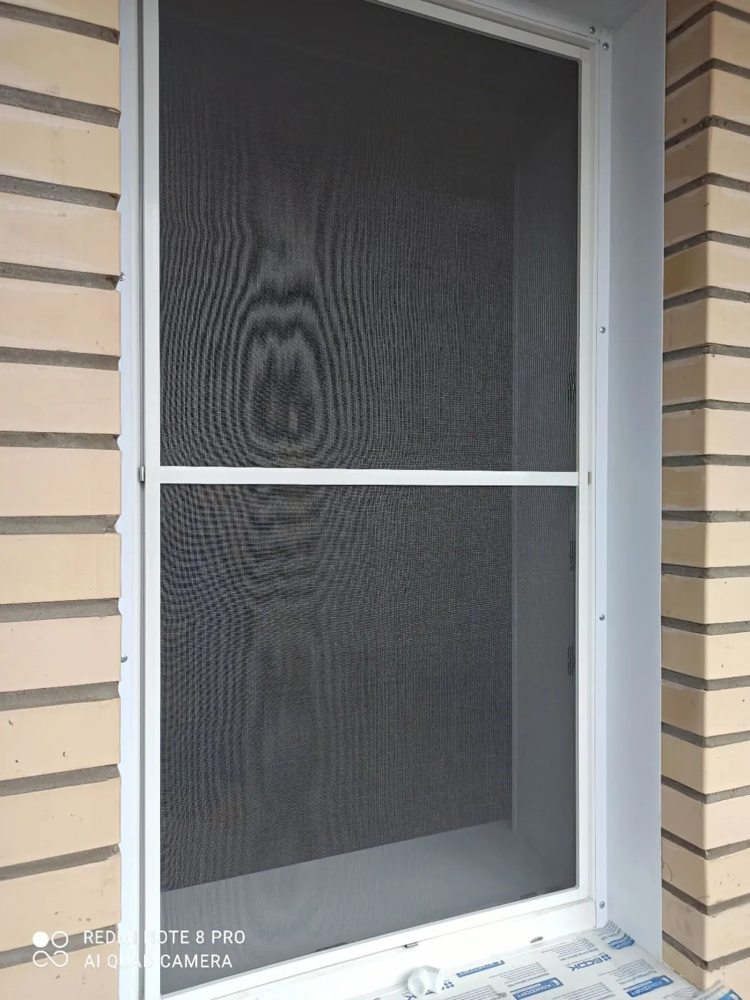
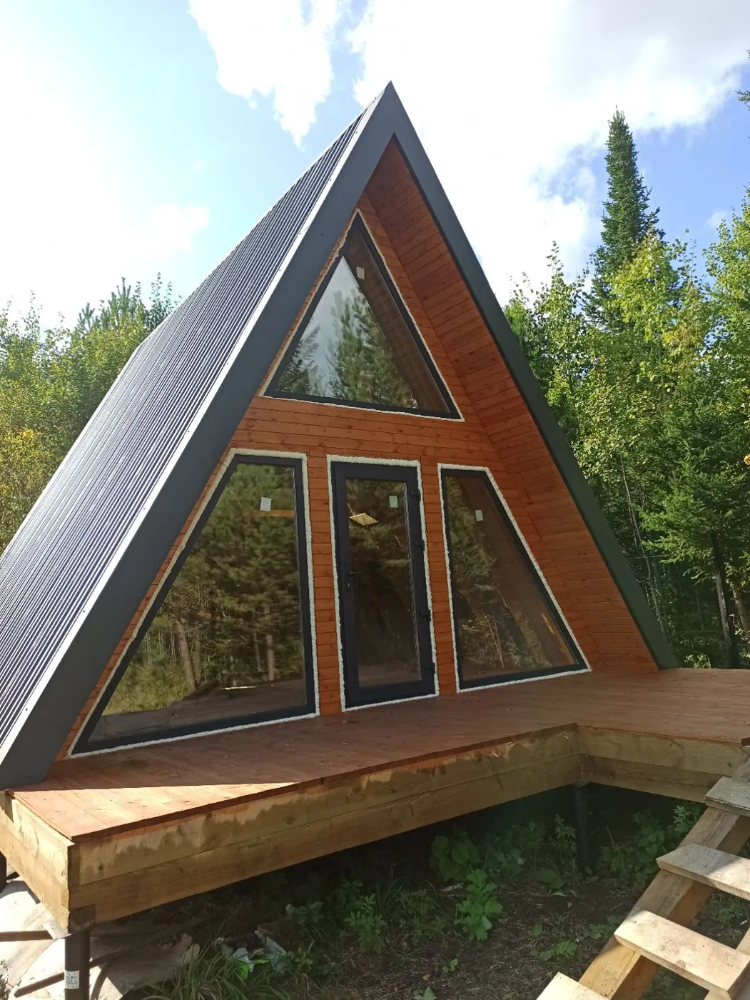

🪟
Ремонт окон
Регулировка створок, устранение продувания, ремонт фурнитуры и другие работы.
Ремонт и обслуживание окон ПВХ, изготовление и монтаж окон, алюминиевых конструкций и остекление балконов.
От небольшого ремонта до изготовления и установки конструкций.
Регулировка створок, устранение продувания, ремонт фурнитуры и другие работы.
Проверка механизмов, замена уплотнителей и профилактическое обслуживание.
Изготовление, установка и замена пластиковых окон.
Остекление балконов и лоджий под задачи вашего помещения.
Изготовление и монтаж алюминиевых конструкций и входных групп.
Опишите задачу — обсудим возможное решение и порядок работ.
Позвоните или отправьте заявку с описанием проблемы.
Обсудим конструкцию, объём работ и дальнейшие действия.
Согласуем условия и организуем выполнение заказа.
13 реальных фотографий окон, балконов, веранд и нестандартных конструкций. Нажмите на фото, чтобы увеличить.












Фотографии предоставлены «ПроОкна24». Для расчёта похожего проекта свяжитесь с нами.
Заполните форму — откроется почтовое приложение с готовым письмом. Отправка происходит после вашего подтверждения.